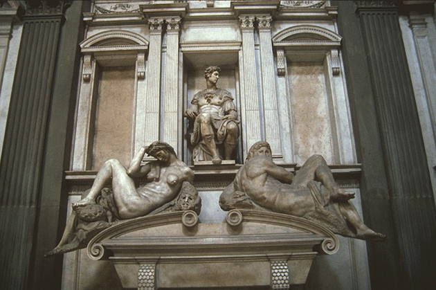

Хронос
Микеланджело Буонарроти
1846-1888
БИОГРАФИЧЕСКИЙ УКАЗАТЕЛЬ
Микеланджело Буонарроти
Микеланджело Буонарроти (1475—1564), будучи на 9 лет старше Рафаэля и на 23 года моложе Леонардо, пережил их обоих больше, чем на 40 лет. Всё то новое и передовое, что рождалось в эту революционную эпоху, должно было завоёвывать себе место в борьбе со старым и реакционным. Величие Микельанджело заключается в том, что главной темой его творчества является пафос борьбы.
Сикстинская капелла
Страшный суд
Пьета
Давид